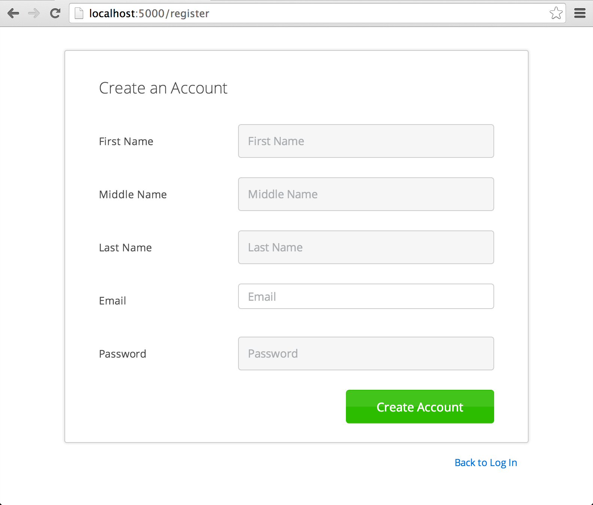

Stormpath Flask Quickstart
Welcome to Stormpath’s Flask Quickstart!
This quickstart will get you up and running with Stormpath in about 10 minutes and give you a good initial feel for the Stormpath Flask library. During this quickstart, you will do the following:
- Install the Flask-Stormpath library.
- Create an API Key that allows you to make REST API calls with Stormpath.
- Create a Stormpath Application.
- Initialize the Flask-Stormpath library.
- Register a new User Account.
- Logout a user.
- Force a user to be logged in to view content.
- Log into your new User account.
Stormpath also can do a lot more (like Groups, Multitenancy, Social Integration, and Security workflows) which you can learn more about at the end of this quickstart.
Let’s get started!
Install the Flask-Stormpath Library
Flask-Stormpath only works with Python 2.7 currently. Python 3.x support is in progress.
You can install Flask-Stormpath using pip:
$ pip install -U flask-stormpath
If that doesn’t work, try this instead:
$ easy_install -U flask-stormpath
Or, you can download the source code (ZIP), extract it, then run:
$ python setup.py install
You may need to run the above commands with sudo depending on your Python
setup.
Get an API Key
All requests to Stormpath must be authenticated with an API Key.
If you haven’t already, Sign up for Stormpath here. You’ll be sent a verification email.
Click the link in the verification email.
Log in to the Stormpath Admin Console using the email address and password you used to register with Stormpath.
Click the Create API Key or Manage Existing Keys button in the middle of the page.
Under Security Credentials, click Create API Key.
This will generate your API Key and download it to your computer as an
apiKey.propertiesfile. If you open the file in a text editor, you will see something similar to the following:apiKey.id = 144JVZINOF5EBNCMG9EXAMPLE apiKey.secret = lWxOiKqKPNwJmSldbiSkEbkNjgh2uRSNAb+AEXAMPLESave this file in a secure location, such as your home directory, in a hidden
.stormpathdirectory. For example:$ mkdir ~/.stormpath $ mv ~/Downloads/apiKey.properties ~/.stormpath/Change the file permissions to ensure only you can read this file. For example:
$ chmod go-rwx ~/.stormpath/apiKey.properties
The apiKey.properties file holds your API key information, and can be used to
easily authenticate with the Stormpath library.
Create a Stormpath Application
When working with Stormpath, you’ll need to create an Application. An
Application is Stormpath’s name for a project. If you’re building a website
named “dronewars.com”, you’d probably want to create a Stormpath Application
named “dronewars”.
To create an Application, visit your Stormpath
Dashboard then click the “Applications”
tab at the top of the screen.
Next, click the “Register Application” button.
In the name field, enter the value “Flask Test”. You can leave the description field blank.
Lastly, click the “Save” button to create your new Application. This
Application will be used through the rest of this quickstart.
Create a Flask App
The first step to working with Flask-Stormpath is creating a basic Flask app.
Place the code below into a file named app.py anywhere on your system:
from flask import Flask
app = Flask(__name__)
app.config['SECRET_KEY'] = 'xxx'
@app.route('/')
def home():
return 'home page!'
@app.route('/secret')
def secret():
return 'secret page!'
if __name__ == '__main__':
app.run()
To start your new Flask app, open the terminal and run:
$ python app.py
You can then test your two predefined views by visiting both:
The SECRET_KEY variable is required by Flask to properly secure sessions.
Since Flask-Stormpath will handle user sessions for you, this variable needs to
be set to a long, random string. Make sure you keep this information safe!
If you want to see all the code from this tutorial in one file, check out this Gist on GitHub: https://gist.github.com/rdegges/4e5bcc75417fbae3b274#file-app-py
Specify Your Credentials
The next step is to add your Stormpath credentials to your Flask app. You can
do this by adding the following code to your app.py file below the
SECRET_KEY definition above:
app.config['STORMPATH_API_KEY_FILE'] = expanduser('~/.stormpath/apiKey.properties')
app.config['STORMPATH_APPLICATION'] = 'Flask Test'
You’ll also need to add the following import to the top of your app.py file:
from os.path import expanduser
The two config variables above tell Flask-Stormpath how to communicate with Stormpath.
Initialize Flask-Stormpath
To initialize Flask-Stormpath, you need to do two things:
Add the following import to the top of your app.py file:
from flask.ext.stormpath import StormpathManager
Add the following line of code below your app config:
stormpath_manager = StormpathManager(app)
This will initialize the Flask-Stormpath extension.
Register a New User
Now that Flask-Stormpath is setup, let’s register a new user!
To do this, visit http://localhost:5000/register — you should see a registration page that looks like this:

Once you’re at the registration page, enter your user information and create a new user account!
By default, Flask-Stormpath ships with a registration and login page, with sensible defaults. This behavior is fully customizable.
Once you’ve created an account, you’ll be automatically redirected back to the home page of your site.
You probably noticed that you couldn’t register a user account without specifying a sufficiently strong password. This is because, by default, Stormpath enforces certain password strength rules on your Stormpath Directories.
If you’d like to change these password strength rules (or disable them), you can do so easily by visiting the Stormpath dashboard, navigating to your user Directory, then changing the “Password Strength Policy”.
Log out a User
Now that we’ve created a user, let’s log our new user out. To do this, visit http://localhost:5000/logout — you will then be logged out of your account and returned to them home page once again.
Flask-Stormpath provides a built-in logout view which makes it easy to log users out.
Create a Restricted View
Next, we’ll add authentication enforcement to one of our views. In your
app.py file, add the following import to the top of your file:
from flask.ext.stormpath import login_required
Then, directly above your secret view, add the login_required decorator —
this view should now look like:
@app.route('/secret')
@login_required
def secret():
return 'secret page!'
Python decorators execute in-order. The login_required decorator MUST be the
last decorator specified.
To test this out, restart your Flask web server then visit http://localhost:5000/secret — you should get redirected to a login page that looks like this:

Log a User Into Their Account
Now that we’re at the login page, enter your user credentials, then log in. You
should now be able to see the secret view!
Flask-Stormpath provides a very flexible login view by default, which allows you to many things (including social login).
Final Code
In the end, your Flask app should look like this:
from os.path import expanduser
from flask import Flask
from flask.ext.stormpath import StormpathManager, login_required
app = Flask(__name__)
app.config['SECRET_KEY'] = 'xxx'
app.config['STORMPATH_API_KEY_FILE'] = expanduser('~/.stormpath/apiKey.properties')
app.config['STORMPATH_APPLICATION'] = 'Flask Test'
stormpath_manager = StormpathManager(app)
@app.route('/')
def home():
return 'home page!'
@app.route('/secret')
@login_required
def secret():
return 'secret page!'
if __name__ == '__main__':
app.run()
Other Things You Can Do with Stormpath
In addition to user registration and login, Stormpath can do a lot more!
- Create and manage user groups.
- Partition multi-tenant SaaS account data.
- Simplify social login with providers like Google and Facebook.
- Manage developer API keys and access tokens.
- Verify new users via email.
- Automatically provide secure password reset functionality.
- Centralize your user store across multiple applications.
Next Steps
We hope you found this Quickstart helpful!
You’ve just scratched the surface of what you can do with Stormpath. Want to learn more? Here are a few other helpful resources you can jump into.
- Dig in deeper with the Flask-Stormpath Docs.
- Build a Flask app in 30 minutes.
- Learn to easily partition user data with our Guide to Building Multitenant SaaS Applications.
- Easily support Social Login with Google and Facebook.
Help Us Spread the Word
Did you find this valuable? If you've enjoyed playing with Stormpath or are excited about what we've built, please help us spread the world with a quick tweet or by just telling a friend. Thank you!
- Copyright © 2015 Stormpath, Inc.
- All rights reserved
- Privacy policy
- Terms of service